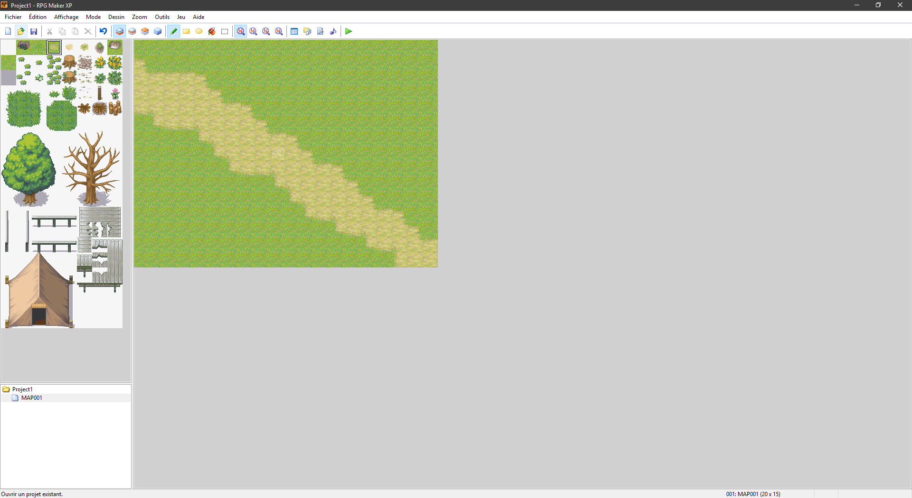
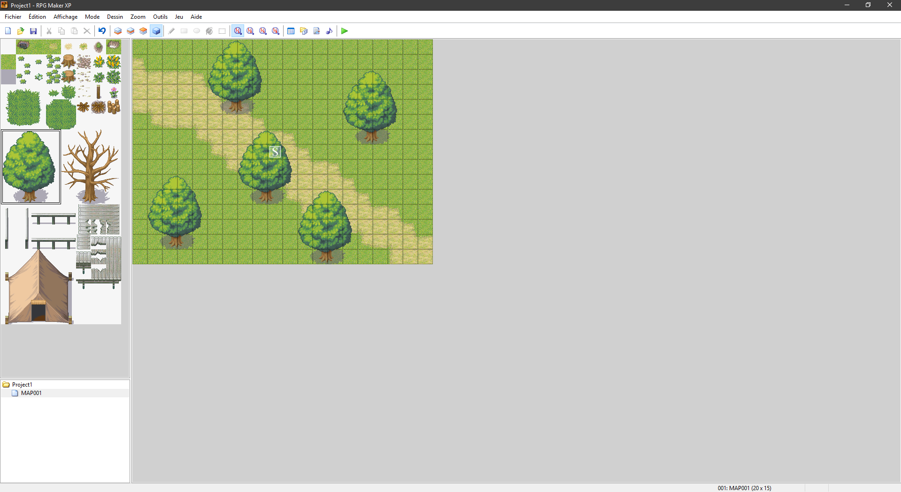
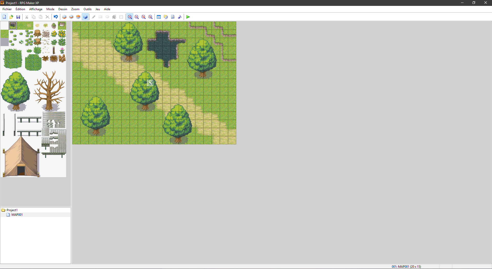
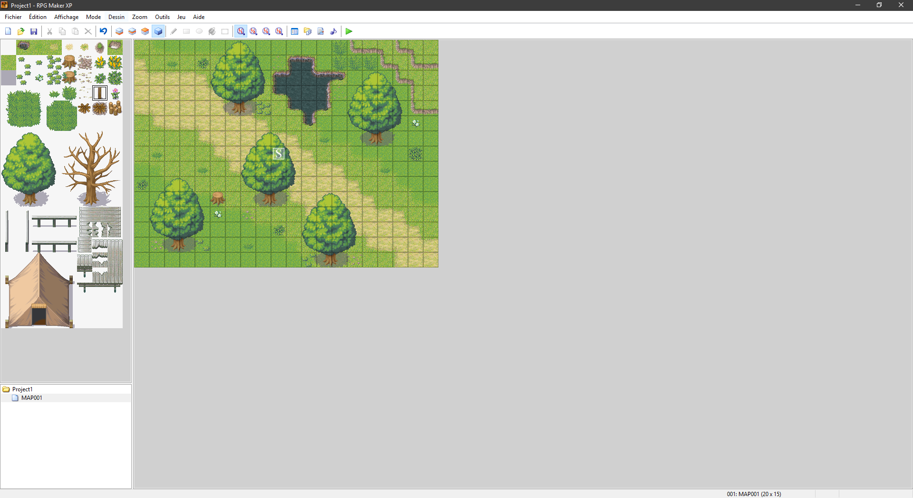
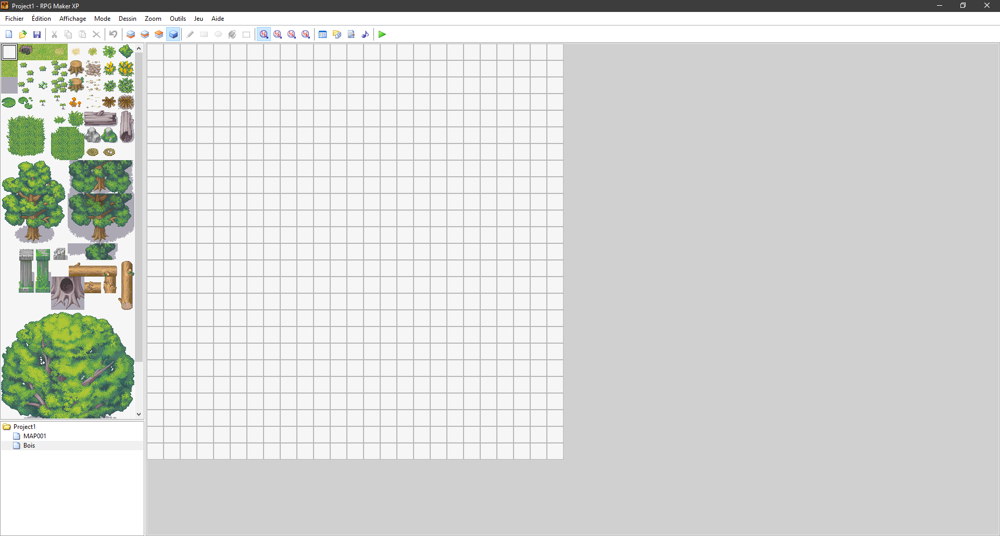
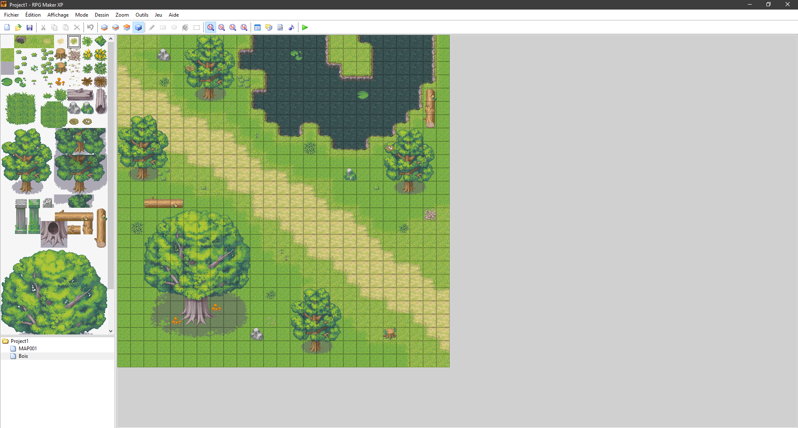
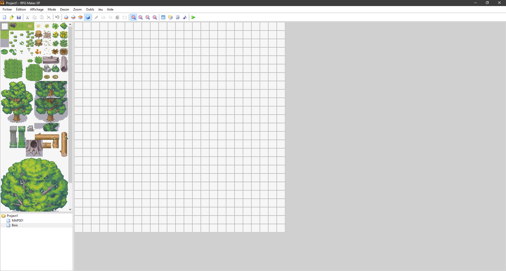
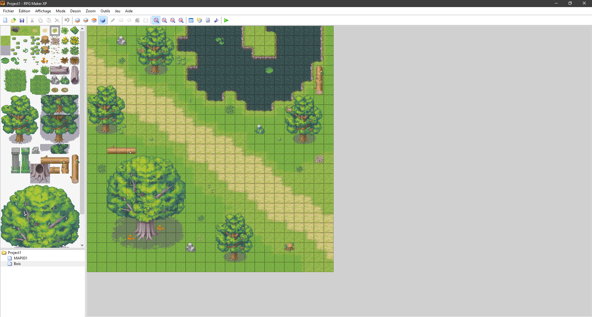

1] Introduction au mapping
1.1) Le système de couche
1.2) Les couches 1, 2 et 3
Dans cette partie nous allons apprendre à créer un univers de jeu ou votre personnage pourra se
déplacer, effectuer des quêtes...
Tout d'abord il faut comprendre le système de couche, la première couche permet de placer le sol sur
lequel votre personnage se déplacera, pour cela il suffit de cliquer sur l'icône de la couche, puis
de se rendre dans la partie en haut à gauche et sélectionner la texture que nous voulons appliquer
sur le sol, pour l'exemple nous avons choisi une texture de chemin.

Après cela, ajoutons un peu de verdure et de relief en plaçant quelques arbres, pour cela il faut
utiliser la couche 2, c'est elle qui va vous permettre de placer des objets tel que des arbres, des
fosses, des rivières ou des plaines et avoir des collisions avec ces-derniers.

D'ailleurs, profitons-en pour ajouter une rivière et une légère colline, toujours avec la couche 2.

Nous avons désormais un début de carte, mais nous n'avons pas encore touché à la couche 3, cette
dernière permet de poser des entités tel que des fleurs ou des cailloux. Faisons donc un peu de
jardinage.

Maintenant, nous allons créer une deuxième carte que nous allons nommer "Bois", cette fois-ci avec
un tileset différents, afin de vous montrer les différentes possibilités qu'offre ce logiciel.
 Pour l'exemple nous allons choisir le tileset "002: Bois" et nous allons aussi
changer la taille de
la carte pour mettre 25 en hauteur et 25 en largeur. Après avoir indiqué vos paramètres et avoir
accepté, vous devriez avoir quelque chose de similaire.

Nous allons donc refaire les mêmes étapes que nous avons vu précédemment, d'abord avec la couche 1
il nous fait un sol, puis avec la couche 2 ajouter du relief avec des arbres et la couche 3 pour les
finitions. (Pour remplir une grande surface rapidement on peut utiliser l'outil rectangle vu à la
page précédente.)
Après avoir décoré notre carte nous obtenons ce résultat.

Maintenant que nous avons une deuxième carte, il faudrait peut-être ajouter un peu de vie,
d'événements dirais-je même !
Pour l'exemple nous allons choisir le tileset "002: Bois" et nous allons aussi
changer la taille de
la carte pour mettre 25 en hauteur et 25 en largeur. Après avoir indiqué vos paramètres et avoir
accepté, vous devriez avoir quelque chose de similaire.

Nous allons donc refaire les mêmes étapes que nous avons vu précédemment, d'abord avec la couche 1
il nous fait un sol, puis avec la couche 2 ajouter du relief avec des arbres et la couche 3 pour les
finitions. (Pour remplir une grande surface rapidement on peut utiliser l'outil rectangle vu à la
page précédente.)
Après avoir décoré notre carte nous obtenons ce résultat.

Maintenant que nous avons une deuxième carte, il faudrait peut-être ajouter un peu de vie,
d'événements dirais-je même !